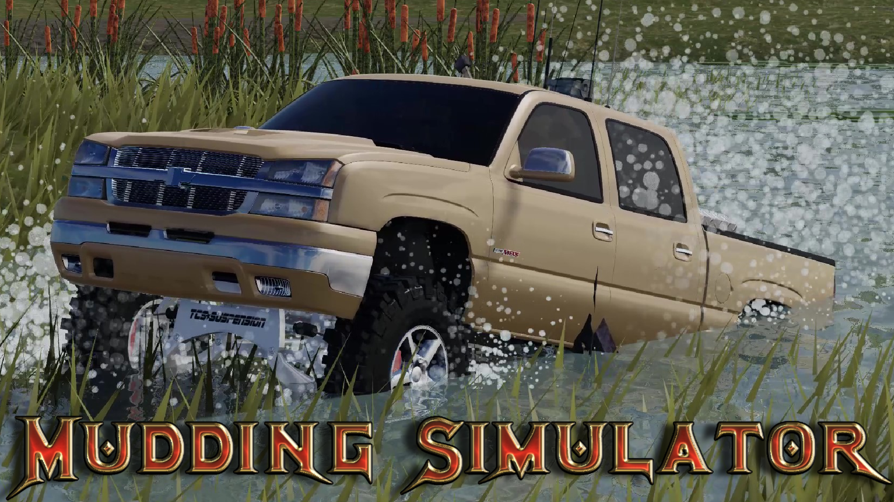
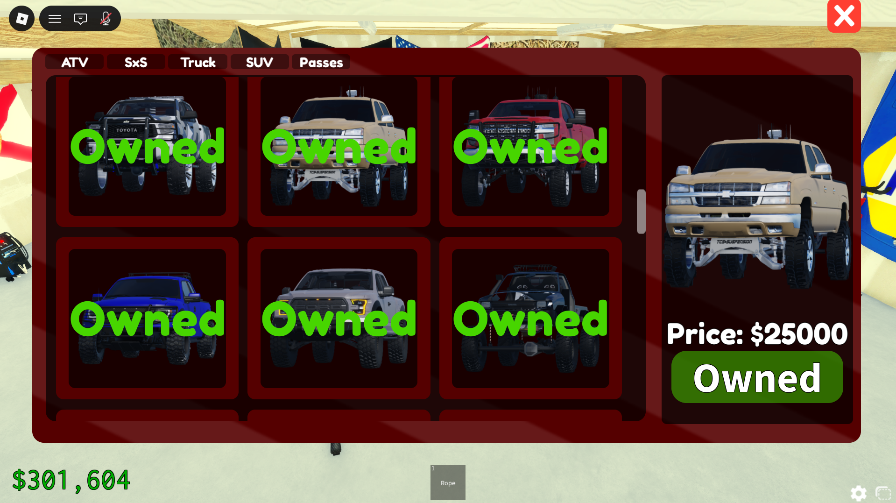
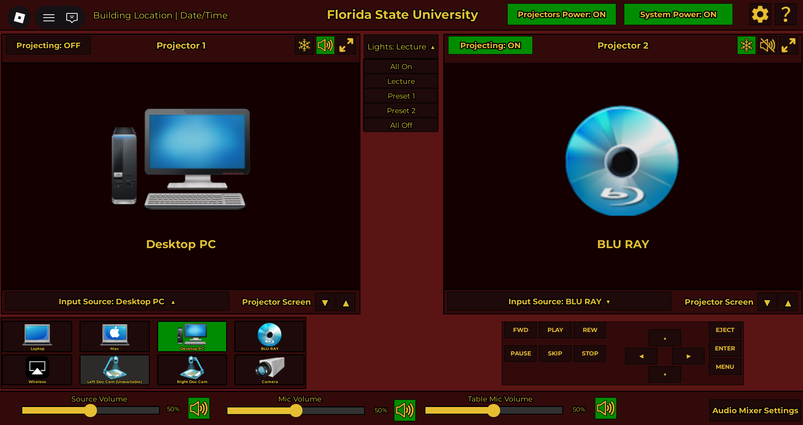

Mudding Simulator
Vehicle systems, UI, progression, tuning, and performance updates.
Interactive Resume, Portfolio, 5055 Studios
Interactive Developer | Game Systems Designer | IT Student
As an Information Technology student and independent game developer, I focus on building reliable systems, clean UI, and performance optimization.
This is what I bring to a team.
Featured Roblox work and systems I build.

Vehicle systems, UI, progression, tuning, and performance updates.

Reusable menus, inventory panels, and clean state handling.

Stability improvements, performance tuning, and bug fixes at scale.
Professional and technical experience that demonstrates my skills in development, problem solving, and teamwork.
Self-Employed | 2024 – Present
Develop and maintain interactive experiences on the Roblox platform, managing projects from concept through launch and continuous updates. This work involves designing gameplay systems, implementing user interfaces, and optimizing performance while analyzing user feedback to improve the experience.
Skills Demonstrated: Lua scripting, debugging, system architecture, UI development, performance optimization, analytical problem solving.
2021 – 2023
Worked in a fast paced operational environment focused on efficiency, teamwork, and customer service. This role required maintaining consistent quality standards while performing effectively under time pressure.
Skills Demonstrated: teamwork, communication, reliability, time management, accountability.
2014 – Present (Part Time)
Assisted with residential repair and improvement projects including electrical work, carpentry, mechanical repairs, and home maintenance. This experience strengthened practical troubleshooting skills and attention to detail while working with real world systems.
Skills Demonstrated: troubleshooting, mechanical reasoning, attention to detail, safety awareness, practical problem solving.
Best next step: reach out, ask for links, or invite me to interview.